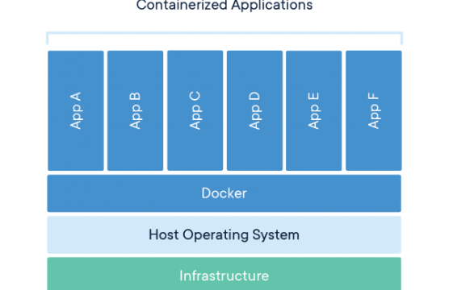
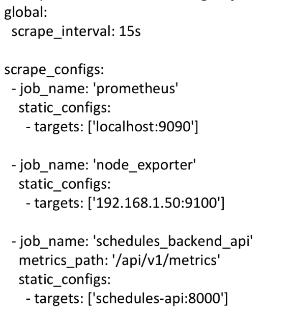

Mapa do conteúdo
Visão geral: o caminho da Prova 2
A matéria é uma história só: o código sai do desenvolvedor, passa por validações automáticas, vira imagem, é publicado, chega na nuvem e continua sendo observado. Entender esse fluxo vale mais do que decorar comandos.
O que a prova cobra
CI/CD
CI, Continuous Delivery, Continuous Deployment, pipeline, feedback e automação.
GitHub Actions / GitLab CI
Workflow, evento, job, stage, runner e YAML — os mesmos conceitos com nomes diferentes.
Docker no CI/CD
Push → test → build → docker build. Build não é run; a imagem é o artefato.
Registry, releases e rollback
Tags, versionamento semântico, releases e estratégias de recuperação.
Cloud
IaaS, PaaS, SaaS, regiões, AZs, computação, redes e disponibilidade.
Terraform
IaC declarativo, providers, resources, variables, outputs, state e ciclo init → destroy.
Na prova Segundo o cronograma, a Prova 2 cobra CI/CD, pipeline, GitHub Actions/GitLab CI, Docker em pipeline, Registry, conceitos de Cloud e Terraform. As Aulas 31–33 (observabilidade) vêm depois da prova — estão aqui como bônus, mas ajudam a fechar o raciocínio do fluxo completo.
Como usar esta página
São curtas e seguem a ordem das aulas. Os quadros roxos destacam o que mais cai.
O progresso fica salvo no navegador. Ao final, a barra lateral mostra o que falta.
São 18 questões com explicação. Errou? Volte direto à seção correspondente.
Aula 16
Fundamentos de CI/CD
CI/CD é sobre automatizar o caminho entre o commit e o usuário, reduzindo trabalho manual e recebendo feedback o mais cedo possível.
O problema: entregar software manualmente
Risco Quanto mais etapas manuais, maior a chance de erro. Problemas descobertos só no final são mais caros de corrigir — e a equipe demora a receber feedback.
Os três conceitos que a prova diferencia
Integração Contínua
Devs integram alterações ao código compartilhado com frequência. A cada mudança, uma automação roda build, testes e verificações. Objetivo: achar problemas cedo.
Entrega Contínua
A aplicação passa por um processo automatizado e fica sempre pronta para ser implantada. A ida para produção pode depender de uma aprovação.
Implantação Contínua
Passou nos critérios automatizados, vai para produção automaticamente. Não há aprovação manual entre pipeline e produção.
| Pergunta | CI | Delivery | Deployment |
|---|---|---|---|
| O que automatiza? | Integração + validação (build/testes) | Todo o caminho até o pacote pronto | Até a publicação em produção |
| Vai sozinho para produção? | Não | Não — pode exigir aprovação | Sim |
| Foco principal | Detectar problemas cedo | Manter versão entregável a qualquer momento | Reduzir intervenção manual |
| Confiança necessária | Média | Alta | Muito alta (testes + controles) |
Pipeline: a espinha dorsal
Pipeline é uma sequência automatizada de etapas que transforma código em uma versão validada e, eventualmente, implantada. Pode variar conforme tecnologia e projeto.
Regra de ouro Cada etapa pode falhar — e o pipeline deve parar na falha. É isso que evita levar um código quebrado até o deploy.
Feedback: saber rápido vale mais que saber bonito
Feedback rápido reduz o tempo entre introduzir e perceber um problema. A pipeline não serve só para deploy: ela informa a qualidade da alteração.
Automação (o que realmente significa)
Definição Automatizar não é “fazer sem pessoas”. É transformar tarefas repetitivas, previsíveis e verificáveis em processos executados por ferramentas: instalar dependências, rodar testes, gerar build, criar artefatos, publicar imagem e fazer deploy.
Resumo de 1 linha CI integra e valida · Delivery mantém pronto para entregar · Deployment implanta automaticamente.
Aula 17
GitHub Actions & GitLab CI
Duas ferramentas, a mesma ideia: código versionado + configuração YAML + evento + executor = automação. Os nomes mudam; a lógica de CI/CD é a mesma.
Regra mental O evento inicia a automação · o pipeline/workflow organiza o trabalho · o runner executa.
Conceitos essenciais
Workflow / Pipeline
Conjunto de instruções que define quando e como a automação roda. No GitHub: um arquivo em .github/workflows/. No GitLab: o .gitlab-ci.yml.
Event / Evento
Situação que dispara o workflow: push, pull_request, workflow_dispatch (manual) ou agendamento.
Job
Unidade de trabalho: reúne comandos de uma etapa lógica (ex.: instalar dependências e rodar testes). Pode depender de outro job.
Stage / Estágio
Fase do pipeline (test, build, deploy). No GitLab é explícito; no GitHub a ordem vem de jobs e dependências.
Step
Passo dentro de um job: um run (comando) ou um uses (ação reutilizável).
Runner
Ambiente que executa os jobs. GitHub-hosted (ubuntu-latest), GitLab Runner ou self-hosted para infra interna.
YAML sem drama
- Indentação com espaços define a hierarquia — nunca use TAB.
- Chave e valor:
name: Primeiro Pipeline. - Listas usam
-para cada item. - Um YAML visualmente simples pode falhar por indentação ou chave errada. Leia o log para achar o step que quebrou.
GitHub Actions
# workflow disparado a cada push na main
name: Primeiro Pipeline
on:
push:
branches: [ main ]
jobs:
test:
runs-on: ubuntu-latest
steps:
- uses: actions/checkout@v4
- name: Instalar dependências
run: npm ci
- name: Rodar testes
run: npm testGitLab CI
# stages explícitos, jobs associados a cada um
stages:
- test
- build
test_app:
stage: test
image: node:22-alpine
script:
- npm ci
- npm test
build_app:
stage: build
script:
- npm run buildGitHub Actions × GitLab CI
| Conceito | GitHub Actions | GitLab CI/CD |
|---|---|---|
| Configuração | .github/workflows/*.yml | .gitlab-ci.yml |
| Gatilho | on | rules / workflow |
| Unidade de trabalho | job | job |
| Fases | jobs / needs | stages |
| Executor | runs-on (runner) | GitLab Runner |
| Comandos | run | script |
| Ações reutilizáveis | uses | templates / includes |
Boas práticas para começar
- Comece pequeno: checkout + validação simples já ensina mais que um deploy complexo.
- Automatize o repetitivo: instalação, lint, testes e build são os primeiros candidatos.
- Versione o YAML: o pipeline é parte do projeto e passa por code review.
- Leia os logs: descubra qual step falhou e qual comando gerou o erro.
- Nada de segredos no YAML: use os mecanismos de secrets/variables da plataforma.
Pegadinha Pipeline “verde” não significa que está tudo certo — significa que os checks configurados passaram. Aprenda a ler logs e a provocar falhas de propósito para testar o pipeline.
Aula 21
Docker dentro do CI/CD
O Docker entra depois da validação: ele empacota a aplicação já testada em uma imagem padronizada. Se o teste falhar, o pipeline deve parar antes de construir ou publicar a imagem.
Por que construir uma imagem?
Sem imagem padronizada
- Ambientes divergem entre máquinas.
- Deploy depende de configurar peças manualmente.
- “Na minha máquina funciona”.
Com Docker
- Aplicação + dependências ficam empacotadas.
- A mesma imagem é promovida entre ambientes.
- Execução reproduzível e previsível.
Decore A imagem é o artefato; o container é uma instância em execução dessa imagem.
Dockerfile: a receita da imagem
FROM node:22-alpine
WORKDIR /app
COPY package*.json ./
RUN npm ci
COPY . .
RUN npm run build
EXPOSE 3000
CMD ["npm", "start"]| Instrução | O que faz |
|---|---|
FROM | Define a imagem-base (aqui, Node 22 sobre Alpine). |
WORKDIR | Define o diretório de trabalho dentro da imagem. |
COPY | Copia arquivos do contexto de build para a imagem. |
RUN | Executa comandos no momento do build (dependências, compilação). |
EXPOSE | Documenta a porta que a aplicação usa. |
CMD | Comando executado quando o container inicia. |
Build não é run
docker build
Cria uma imagem a partir do Dockerfile e do contexto do projeto.
docker run
Cria e inicia um container usando uma imagem existente.
Fluxo A CI pode construir a imagem; o CD publica no Registry e implanta no servidor.
Boas práticas no pipeline
- Falhe rápido: teste quebrou? para o pipeline antes do build da imagem.
- Tag rastreável: identifique a imagem com SHA do commit ou versão, não só
latest. - Sem segredos na imagem: tokens e senhas não entram no Dockerfile nem nas camadas.
- Separe responsabilidades: testes validam o código, build prepara o artefato, Docker empacota.
Aulas 22 e 23
Registry, releases e rollback
Versionar é o que torna o rollback possível. Se você não sabe qual versão está em produção, não sabe para onde voltar.
Cenário clássico 10:00 deploy v1.0 → 11:00 v1.1 → 12:00 v1.2 → 12:05 o sistema apresenta erro. Para qual versão voltamos? Sem versionamento, ninguém sabe o que está rodando.
Sem versionamento × com versionamento
Sem versionamento
- Não sabemos qual código está em produção.
- Não sabemos qual imagem está rodando.
- Perdemos a referência da última versão funcional.
Com versionamento
- Cada versão (v1.0.0, v1.1.0…) é um estado conhecido.
- Tag do Git + tag da imagem contam a mesma história.
- O Registry guarda versões anteriores para rollback.
Git tags, imagens e releases
# marca um ponto específico do histórico
git tag v1.0.0
git push origin v1.0.0Tag no Git = tag na imagem
Git v1.0.0 → imagem minha-api:v1.0.0. A mesma identificação conecta código e imagem, e permite promoção entre ambientes.
Release é uma versão pronta para distribuição: pode conter número, descrição e alterações, e normalmente está associada a uma Git Tag. Registry é o repositório de imagens: é de lá que o deploy puxa a imagem e o rollback busca a versão anterior.
# publica a versão nova
docker build -t minha-api:v1.2.0 .
docker tag minha-api:v1.2.0 registry.exemplo.com/minha-api:v1.2.0
docker push registry.exemplo.com/minha-api:v1.2.0
# rollback: puxa a versão anterior que continua no Registry
docker pull registry.exemplo.com/minha-api:v1.1.0Versionamento semântico (SemVer)
MAJOR.MINOR.PATCH — a regra que a prova costuma pedir.
| Parte | Quando muda | Exemplo |
|---|---|---|
| MAJOR | Mudança incompatível (quebra contrato) | 2.5.0 → 3.0.0 |
| MINOR | Nova funcionalidade compatível | 2.4.8 → 2.5.0 |
| PATCH | Correção de bug compatível | 1.2.3 → 1.2.4 |
Rollback: voltar para o que funcionava
Rollback = voltar a uma versão anterior conhecida e funcional. Com Docker: docker pull da imagem antiga, parar/remover a versão atual e subir o container anterior. O rollback também pode ser automatizado pelo pipeline.
Três estratégias de entrega
| Estratégia | Como funciona | Quando faz sentido |
|---|---|---|
| Recreate | Stop → Remove → Pull → Run. Troca diretamente a versão. | Mais simples para começar; aceita uma pequena janela de indisponibilidade. |
| Blue/Green | Mantém duas versões: BLUE (atual) e GREEN (nova). Testa a GREEN e troca o tráfego; se der problema, volta para a BLUE. | Quando não pode ficar fora do ar e precisa de retorno rápido. |
| Canary | Libera para uma fração dos usuários (ex.: 10%) e aumenta gradualmente (10% → 50% → 100%). Se falhar, volta a 0%. | Rollout controlado, com exposição reduzida ao risco. |
Pipeline com versões
Frase de prova CI/CD não é só automatizar o deploy: é criar um processo confiável para entregar, versionar, monitorar e voltar atrás quando necessário.
Aula 25
Fundamentos de Cloud
Cloud é o uso de recursos de computação pela internet, sob demanda: servidores, armazenamento, bancos, redes e serviços gerenciados. A infraestrutura física fica com o provedor, em diferentes níveis de responsabilidade.
Por que Cloud mudou o DevOps?
Provisionamento rápido
Criar recursos em minutos, em vez de comprar e configurar servidores físicos.
Infraestrutura como código
A infraestrutura pode ser descrita e automatizada (Terraform entra aqui).
Ambientes reproduzíveis
Dev, homologação e produção podem ser recriados com a mesma definição.
Escalabilidade e serviços gerenciados
Escalar de forma automatizada e delegar camadas operacionais ao provedor.
IaaS, PaaS e SaaS
Infrastructure as a Service
Infraestrutura virtualizada: VMs, discos, redes, balanceadores. O cliente administra o sistema operacional e acima. Mais controle, mais responsabilidade.
Ex.: criar uma VM Linux, instalar Docker e publicar a aplicação.
Platform as a Service
Plataforma pronta para executar aplicações. O foco fica no código; o provedor cuida da infraestrutura e do runtime. Mais produtividade, menos controle.
Ex.: deploy sem administrar diretamente a VM.
Software as a Service
Aplicação pronta consumida como serviço. O usuário não administra servidor, SO nem runtime. A operação fica com o fornecedor.
Ex.: e-mail, colaboração, CRM.
| Camada | IaaS | PaaS | SaaS |
|---|---|---|---|
| Aplicação | você | você | provedor |
| Runtime | você | provedor | provedor |
| Sistema operacional | você | provedor | provedor |
| Virtualização | provedor | provedor | provedor |
| Hardware | provedor | provedor | provedor |
Região × Availability Zone
- Região: área geográfica onde o provedor mantém infraestrutura. Afeta latência, custo, serviços disponíveis e requisitos legais.
- Availability Zone: unidade de infraestrutura isolada dentro de uma região, projetada para reduzir o impacto de falhas.
- Distribuir componentes entre AZs aumenta a disponibilidade. Múltiplas regiões vão além, quando necessário.
Pegadinha Alta disponibilidade não acontece automaticamente: a arquitetura precisa usar as AZs corretamente. E “região” não é “um servidor”.
Computação na Cloud
Máquina virtual
Maior controle sobre o ambiente. Você administra o SO.
Containers
Empacotam aplicação e dependências de forma padronizada. A imagem pode ficar no Registry e ser executada pela Cloud.
Serverless
Execução sob demanda, sem administrar servidores diretamente. Paga pelo uso.
Redes na Cloud
Conceitos importantes: IP, sub-redes, roteamento, DNS, firewall e balanceamento. Rede pública expõe recursos conforme regras; rede privada isola o que não deve ser acessado diretamente. Segurança de rede é parte da arquitetura — não configuração posterior.
Cloud + DevOps
- Cloud fornece infraestrutura e serviços sob demanda.
- DevOps fornece práticas para entregar e operar com rapidez e confiança.
- CI/CD automatiza a entrega; IaC automatiza a infraestrutura.
- Containers padronizam a execução; monitoramento detecta e ajuda a resolver problemas.
Decisão de arquitetura Escolher região, quantidade de AZs e onde fica o banco não é detalhe: impacta disponibilidade, latência, custo e segurança.
Aula 27
Infraestrutura como Código & Terraform
IaC é gerenciar servidores e redes por arquivos de configuração versionáveis. Em vez de clicar no console, você descreve o estado desejado — e a ferramenta calcula como chegar lá.
Repetibilidade
Ambientes de dev, staging e produção criados de forma idêntica.
Rastreabilidade
Histórico de alterações auditável via Git, com revisão como código.
Consistência
Menos configuração manual e menos divergência entre ambientes.
Declarativo × imperativo
“O QUE deve ser criado”
Você define o estado final desejado; a ferramenta calcula os passos. Exemplos: Terraform, CloudFormation.
“COMO deve ser criado”
Você especifica a sequência exata de comandos. Exemplos: scripts Shell, AWS CLI.
Blocos fundamentais do Terraform
Providers
Plugins de integração com APIs: AWS, Azure, Docker…
Resources
Componentes reais a criar: VMs, redes, discos, balanceadores.
Variables
Parâmetros de entrada flexíveis, sem valores fixos no código.
Outputs
Valores retornados após o provisionamento (ex.: IP público).
terraform {
required_providers {
aws = { source = "hashicorp/aws", version = "~> 5.0" }
}
}
provider "aws" {
region = "us-east-1"
}
variable "instance_type" {
default = "t3.micro"
}
resource "aws_instance" "app" {
ami = "ami-12345678"
instance_type = var.instance_type
tags = { Name = "devops-app" }
}
output "ip_publico" {
value = aws_instance.app.public_ip
}Ciclo de vida: os 4 comandos
terraform initInicializa o diretório e baixa os plugins dos providers.
terraform planCompara o código com o state e gera a prévia das alterações. Não executa nada.
terraform applyExecuta as mudanças e atualiza a infraestrutura real (e o state).
terraform destroyRemove todos os recursos gerenciados pelo projeto.
Terraform State (.tfstate)
Fonte única da verdade
Mapeia o código HCL aos recursos reais provisionados na nuvem.
Detecção de drift
Identifica alterações manuais feitas fora do código.
Performance
Guarda metadados e evita consultas lentas às APIs.
Locking
Previne execuções concorrentes simultâneas sobre o mesmo state.
Cuidado O state pode conter dados sensíveis. O ideal é armazená-lo em um backend remoto (com locking), não no Git. Perder o state é perder a ligação com o que já foi criado.
Terraform × Ansible
| Terraform | Ansible | |
|---|---|---|
| Foco | Provisionamento de infraestrutura | Gestão de configuração |
| O que faz | Cria VMs, redes, discos, balanceadores | Instala pacotes, ajusta arquivos e serviços |
| Nível | Componentes de nuvem | Configuração interna do servidor |
| Estado | Gerencia arquivo de state | Execução sem agente, via SSH |
Integração completa

Imagem do slide da Aula 27 (UVV).
Separe os papéis Terraform provisiona a infraestrutura (VM, rede, security group). Ansible/Docker configuram e executam o que roda dentro dela. Terraform não substitui Dockerfile nem Ansible.
Aulas 31, 32 e 33 · bônus
Observabilidade, Prometheus e Grafana
Atenção Este conteúdo vem depois da Prova 2 no cronograma. Está incluído como bônus para fechar o fluxo DevOps — se a sua turma antecipou, cai aqui também.
Monitorar responde “o que está acontecendo?”. Observar responde “por que está acontecendo?”. A diferença está na capacidade de investigar o desconhecido.
| Monitoramento | Observabilidade | |
|---|---|---|
| Pergunta | O que está acontecendo? | Por que está acontecendo? |
| Foco | Falhas conhecidas (known-unknowns) | Falhas imprevistas e complexas (unknown-unknowns) |
| Exemplo | Checar se a API responde 200 a cada 30s | Descobrir por que só alguns clientes têm 5s de latência |
| Ferramentas | Zabbix, Nagios, Prometheus, Datadog | OpenTelemetry, Grafana Tempo, Dynatrace, Honeycomb |
Os três pilares
Logs
Registro cronológico de eventos discretos. Melhor quando estruturado (JSON) com timestamp, nível, serviço e contexto.
Métricas
Valores numéricos agregados ao longo do tempo. Tendências, uso de recursos e saúde global. Quatro sinais dourados: latência, tráfego, erros e saturação.
Tracing
Caminho completo de uma requisição entre serviços. Trace ID, span e propagação de contexto revelam o gargalo.
Health checks
Endpoints que expõem a saúde da aplicação para orquestradores e load balancers. Liveness: a aplicação está viva? Readiness: está pronta para receber tráfego?
{
"status": "UP",
"checks": {
"database": "UP",
"redis_cache": "UP",
"rabbitmq_queue": "DOWN"
}
}Alertas
Notificação automática quando uma métrica ultrapassa um limite. Evite alert fatigue: notifique ações necessárias, não qualquer evento.
alert: HighErrorRate
expr: rate(http_requests_total{status=~"5.."}[5m]) > 0.05
for: 2m
labels:
severity: critical
annotations:
summary: "Taxa de erro 5xx acima de 5% nos últimos 5 minutos"Prometheus: modelo pull
O Prometheus é um sistema open-source de monitoramento focado em séries temporais (TSDB). Ele puxa métricas periodicamente dos alvos, em vez de esperar que agentes enviem dados (push).
- Target: endpoint HTTP que expõe métricas no formato Prometheus (ex.:
/metrics). - Exporter: adaptador que traduz dados de SO ou terceiros (Node Exporter, Postgres Exporter, Redis Exporter).
- Scraping: raspagem contínua; o intervalo é configurável (ex.:
scrape_interval: 15s). - Vantagem do pull: o servidor controla a frequência; scrape falhou = instância provavelmente caiu; evita sobrecarga de aplicações descontroladas.
Counter
Só cresce (ou zera no restart): total de requisições.
Gauge
Sobe e desce: uso de RAM, CPU.
Histogram
Agrupa observações em buckets: latência p95/p99.
Summary
Calcula quantis diretamente na aplicação.
# % de uso de CPU (via Node Exporter)
100 - (avg by (instance) (rate(node_cpu_seconds_total{mode="idle"}[5m])) * 100)
# % de erros HTTP 5xx
(sum(rate(http_requests_total{status=~"5.."}[5m]))
/ sum(rate(http_requests_total[5m]))) * 100
/api/v1/metrics.
Imagem do slide da Aula 32 (UVV).
Grafana: de dado bruto a decisão
Grafana consulta os dados na origem e transforma em dashboards atualizados automaticamente. Ele não é o banco principal das métricas.
Visualizações comuns
- Time series: evolução ao longo do tempo.
- Stat: valor único/instantâneo.
- Gauge: valor em relação a uma faixa/limite.
- Bar chart / Table / Pie: comparações, detalhes e proporções.
Boas práticas
- Defina as perguntas antes dos gráficos.
- Títulos, unidades e períodos claros.
- Evite painéis redundantes e excesso de cores.
- Visão geral primeiro, detalhes depois.
- Valide dados/consultas antes de decidir.
Resumo Logs contam o que aconteceu, métricas mostram tendências, tracing revela o caminho e o gargalo. Prometheus coleta e alerta; Grafana visualiza.
Revisão de véspera
Cola da prova
Se você só tiver 5 minutos antes da prova, leia esta seção.
.github/workflows/*.yml × .gitlab-ci.yml; run × script; uses × templates.docker build cria imagem; docker run inicia container./metrics; TSDB; 4 tipos: counter, gauge, histogram, summary.Pegadinhas que derrubam
- Delivery ≠ Deployment: os dois são “CD”, mas só o Deployment publica sozinho.
- CI ≠ deploy: CI valida a integração; deploy é outra etapa.
- YAML com TAB: quebra a hierarquia. Use espaços.
- Segredo no YAML: tokens e senhas vão para secrets/variables, nunca para o arquivo versionado.
- Tag
latestnão é versão: sem tag rastreável, o rollback fica às cegas. - Terraform não configura o servidor: ele provisiona; Ansible/config management entra depois.
- State não é código: o
.tfstateguarda o mapeamento dos recursos e pode conter dados sensíveis. - AZ não é região: a AZ está dentro da região.
- Counter × Gauge: memória é gauge (sobe e desce); total de requisições é counter (acumula).
- Observabilidade não é só dashboard: é conseguir investigar o desconhecido com logs, métricas e traces.
Fluxo mental final Codificar → testar → construir → empacotar → versionar → publicar → deploy → monitorar → rollback se precisar.
Teste rápido
Quiz — 18 questões
Escolha uma alternativa por questão. A explicação aparece na hora — sem enrolação.